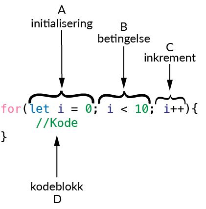

4.3 For-løkker
En av de store styrkene til en datamaskin er evnen til å gjøre noe mange ganger etter hverandre svært fort. Ofte ønsker vi å gjøre noe et bestemt antall ganger. I et dataprogram bruker vi en løkke for å gjøre noe gjentatte ganger, og hvis vi vet hvor mange ganger vi ønsker å gjøre det så kan en for-løkke være ideell.
For å gjøre noe et bestemt antall ganger så trenger vi noe som kan holde styr på hvor mange ganger vi allerede har gjort noe. Til det kan vi bruke en variabel. Vi må så vite tre ting om variabelen:
1. Hva skal startverdien være? Vi kan feks. starte med verdien 0.
2. Hva skal sluttverdien være? Dette sier vi til programmet ved å stille et krav til variabelen, f.eks. kan vi si variabelen må være mindre enn 10.
3. Hvor mye skal variabelen endre seg hver gang vi går gjennom løkka?
På det siste punktet er det viktig å passe på at variabelen endrer seg slik at den til slutt passerer sluttverdien. Hvis vi sier variabelen skal starte på 0, må være mindre enn 10, og hele tiden minker med 1, så vil programmet fortsette å gå gjennom løkka i det uendelige. Da vil programmet kræsje!
For å illustrere syntaksen til en for-løkke kan vi begynne med et enkelt eksempel. Vi ønsker å lage et program som teller fra 1 til 10. Da lar vi teller-variabelen starte på 1. Vanligvis ville vi sagt:
Så kommer kravet, teller må være mindre enn, eller lik, 10:
teller <= 10;Til slutt ønsker vi å øke telleren med 1 for hver runde gjennom løkka. Altså vil vi si at etter hver runde så får vi:
teller = teller + 1;Inni selve løkka, i hver runde, vil vi så skrive ut verdien til telleren i konsollen:
console.log(teller);Nå har vi alle ingrediensene til for-løkka, vi må bare skrive de opp på rett måte. Når vi kombinerer alle tingene ovenfor får vi:
for(let teller = 0; teller <= 10; teller = teller + 1){ console.log(teller); }Vi ser at all informasjonen om variabelen som holder styr på hvor mange ganger vi har gått gjennom løkka oppgis inni parentesen med kodeordet for. Alt som står mellom { og } er den koden som kjøres hver runde i løkka. Det er vanlig å bruke litt enklere navn på tellervariabelen. Man står fritt til å velge navn, men som regel er det en bokstav som f.eks. i som brukes. I tillegg er det også vanlig å forkorte skrivemåten for hvor mye tellervariabelen skal øke med for hver runde. Så lenge den bare øker med 1 så pleier vi å bruker ++ operatoren. Med disse to endringene blir for-løkka vi skrev ovenfor til:
for(let i = 0; i <= 10; i++) { console.log(i); }Nedenfor vises en illustrasjon av anatomien til en for-løkke:
